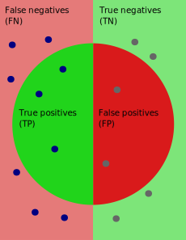
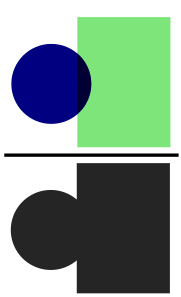
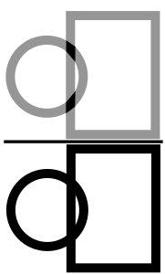

When hovering over each metric, a small description, a drawing and the equation will be shown.
The equations and the schematics are of a binary classification problem.
The drawings are all based over these representations of the predictions and the groundtruth.
The circle represents the predictions (positive) of the model and the rectangle the groundtruth.
Green represents the positive class and red the negative class.
For a binary classification problem, the scores represent the metric computed.
For a multi-class problem, the scores are only given for the kappa metric and are otherwise
represented in the micro- and macro-average column.
For a multi-class problem, this column shows the micro-average of the metrics.
The micro-average aggregates the contributions of all classes in order to compute the average metric.
For example, when computing the micro precision, the true positives and false positives of each class will be
summed before being inputed into the formula.
For a multi-class problem, this column shows the macro-average of the metrics.
The macro average computes the metric independently for each class and then takes the average over all classes
(treating all classes equally).
Fraction of relevant instances among the retrieved instances (w.r.t sensitivity).
Metric ranges from 0 to 100 %.
Percentage of pixels in the segmentation that are correctly classified.
Metric ranges from 0 to 100 %.
Harmonic mean of the precision and sensitivity.
Metric ranges from 0 to 100 %.
Probability of predicting a negative test.
Metric ranges from 0 to 100 %.
Fraction of relevant instances that were retrieved (w.r.t. precision) or
probability of predicting a positive test (w.r.t specificity).
There is a balance to be found between precision and sensitivity (recall) and between sensitivity and specificity.
Metric ranges from 0 to 100 %.
Tells us how much the classifier is better than a random guess.
Negative values mean that the classifier is performing less accurately than a random guess (0).
Metric of 1 indicates a perfect classifier.
Metric ranges from negative values to 1.

Intersection over Union (Jaccard Index).
Overlap between the predicted segmentation and the groudtruth divided by the area of union between both.
Metric ranges from 0 to 100 %.
Boundary Dice. A small mask around the boudary of the predictions and groundtruth are computed by dilatation and erosion operations.
The Dice metric is then computed only considering those boundaries.
Metric ranges from 0 to 100 %.

Boundary Intersection over Union (Jaccard Index). A small mask around the boundary of the predictions and groundtruth are computed by dilatation and erosion operations.
The IoU metric is then computed only considering those boundaries.
Metric ranges from 0 to 100 %.